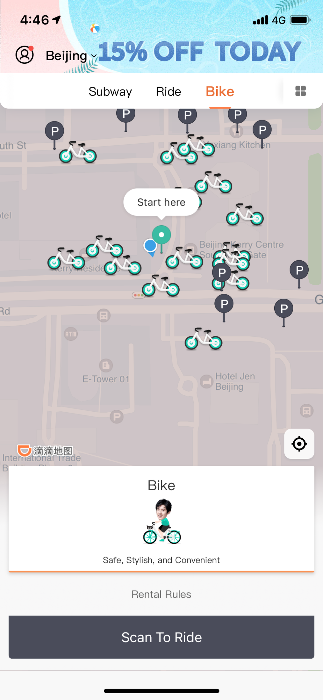

🚅 Transportation System
💬 Commonly used route query and translation apps in China?
Map apps: Baidu Map and Amap (高德地图) are the most commonly used by Chinese people. Both have English interfaces.
Translation apps: Baidu Translate and Youdao are the most popular translation apps in China.
🚗 Can foreigners rent a car and drive by themselves in China?
Foreign driving licenses are generally not valid in China, so self-driving is restricted. However, international travelers can easily book ride-hailing services:
- Via WeChat: Click on "Me" → "Services" → "Mobility" or "Ride Hailing" → enter pickup & destination.
- Via Alipay: Click on "Transport" → "Taxi" → enter pickup & destination.
- Via Didi App: Download "Didi-Greater China" — supports foreign phone numbers and international credit cards. Choose from Express, Taxi, Premier, or Luxe services.
🚄 How to book long-distance transportation?
🚅 Train / High-speed rail:
- Book via the 12306 official app or website (requires registration with passport number)
- Alternatively, use Trip.com, Klook, or your hotel concierge
- Present your passport at the ticket gate or use self-service collection machines
- High-speed rail (G/D trains) connects most major cities with speeds up to 350 km/h
✈️ Airplane:
- Book on Trip.com, Ctrip, or airline official websites
- Arrive at the airport at least 2 hours before domestic flights
- International terminals require 3 hours
🚍 What mode of transportation is recommended for short distances?
🚇 Metro: Fast, cheap, and air-conditioned. Available in 55+ cities. Use WeChat/Alipay or buy a Metro Card at the station.
🚌 Bus: Very affordable but can be confusing without Chinese. Use maps apps for route planning. Pay with transit card or mobile payment.
🚕 Online ride-hailing: Didi is the most convenient option for foreigners. English interface available.
🚲 Does CityWalk provide shared bicycles? How to use them?
Yes! Shared bikes are widely available in Chinese cities. Didi has its own shared bike service accessible directly via the Didi app.
Step 1: Find a Didi bike
- Tap on the "Bike" tab in Didi's screen menu
- Nearby available Didi bikes will appear on the map
- Tap "Scan to ride" and scan the QR Code on the bike to unlock and start riding
Step 2: End your bike journey
- Park the bike at designated shared bike parking lots
- Lock the bike to end the trip
- The trip fee will be automatically deducted from your Didi account
- ⚠️ Do NOT park in no-parking zones — you won't be able to lock the bike or end the journey
Ⓜ️ How do I use a public transportation card (MetroCard)?
A total of 55 cities in China have metro lines. Foreign travelers can:
- Apply for a metro pass at the metro station service desk (requires passport)
- Use WeChat or Alipay to directly tap and pay at metro gates — no physical card needed
🚖 Recommended taxi app — DiDi
DiDi (滴滴) is China's most popular ride-hailing app, similar to Uber. It now has an English version for international travelers.
